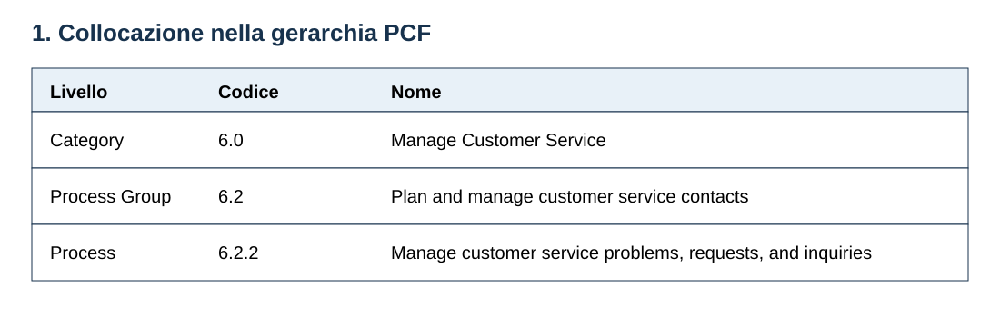
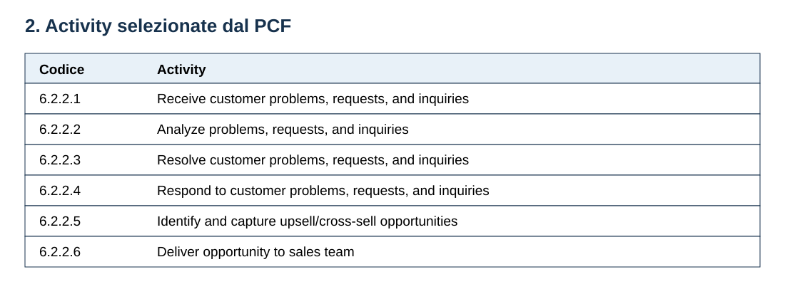
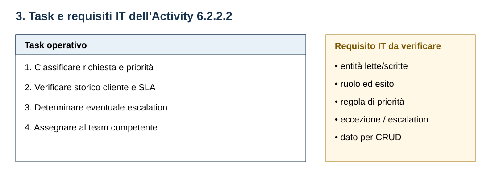
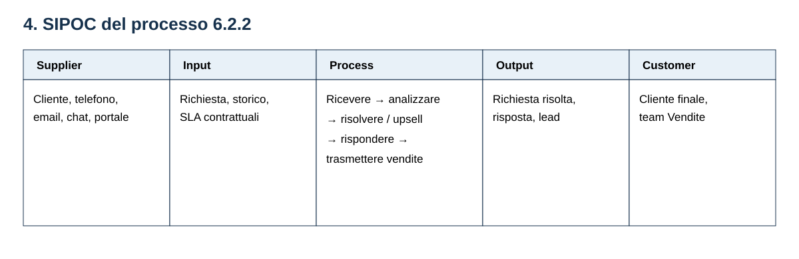
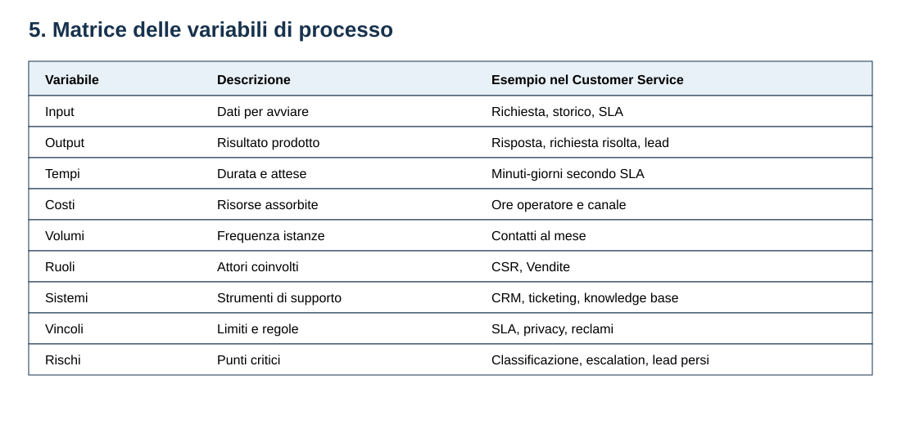
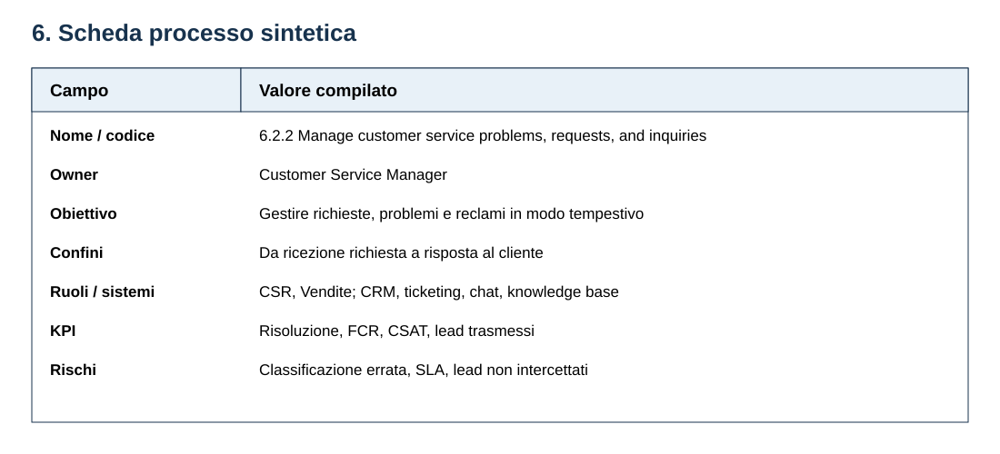

Indice del modulo
- 1 Costruire la scheda processo: percorso guidato
- 1.1 Passo 1 — Collocazione nella gerarchia PCF
- 1.2 Passo 2 — Scelta delle Activity dal PCF
- 1.3 Passo 3 — Scomposizione in Task e requisiti IT
- 1.4 Passo 4 — Analisi SIPOC
- 1.5 Passo 5 — Matrice delle variabili
- 1.6 Passo 6 — Scheda sintetica del processo
- 1.7 Passo 7 — Disegno BPMN
- 2 Il deliverable completo
- 2.1 Elementi del pacchetto e funzione
- 2.2 Riuso come template
- 3 Laboratorio finale
1 Costruire la scheda processo: percorso guidato
La scheda processo viene costruita per passi, usando come esempio la scheda completa della Category 6.0 Manage Customer Service, disponibile nel repository alla voce 05-customer-service/processo.md.
Ogni passo aggiunge un'informazione verificabile e prepara quello successivo: prima si fissa il perimetro, poi si scelgono le Activity, si dettagliano i Task, si analizzano scambi e variabili, si sintetizza il processo e infine lo si rappresenta in BPMN.
1.1 Passo 1 — Collocazione nella gerarchia PCF
Si riportano Category, Process Group e Process con codice e nome ufficiale. La collocazione impedisce di descrivere un processo senza contesto e collega la scheda alla tassonomia APQC.
Per Category 6.0 la sequenza è: 6.0 Manage Customer Service → 6.2 Plan and manage customer service contacts → 6.2.2 Manage customer service problems, requests, and inquiries. Si annotano inoltre trigger e output finale, che delimitano il processo.

1.2 Passo 2 — Scelta delle Activity dal PCF
Si selezionano le Activity che realizzano il Process, mantenendo codice, nome e identificativo APQC. La scelta deve coprire il percorso end-to-end senza aggiungere attività estranee al perimetro.
Nel caso 6.2.2 le Activity vanno da Receive ad Deliver opportunity to sales team. L'elenco costituisce l'indice operativo del processo e diventa la base per Task, SIPOC e BPMN.

1.3 Passo 3 — Scomposizione in Task e requisiti IT
Si sceglie almeno una Activity e la si scompone in Task osservabili, ciascuno con esecutore ed esito verificabile. Nel nostro esempio l'Activity Analyze problems, requests, and inquiries diventa classificare la richiesta, verificare storico e SLA, decidere l'escalation e assegnare il caso.
La scomposizione si collega ai requisiti IT del Modulo 2: per ogni Task si annotano ruolo, input/output, dati letti o scritti, operazioni CRUD, regole, eccezioni e criteri di verifica. Il PCF definisce Activity, mentre Task e requisiti IT dipendono dal contesto organizzativo e applicativo.

1.4 Passo 4 — Analisi SIPOC
Si compilano Supplier, Input, Process, Output e Customer per fissare gli scambi ai bordi del processo. La colonna Process contiene macro-fasi, non tutti i Task; ogni input deve avere un fornitore e ogni output un destinatario.
Per il customer service i fornitori sono il cliente e i canali di contatto; gli input sono richiesta, storico e SLA; le macro-fasi seguono le Activity; gli output sono risposta, richiesta risolta ed eventuale lead; i clienti sono cliente finale e team Vendite.

1.5 Passo 5 — Matrice delle variabili
Si traducono nella matrice le grandezze che descrivono il processo: input, output, tempi, costi, volumi, ruoli, sistemi, vincoli e rischi/colli di bottiglia. Ogni riga deve riferirsi allo stesso perimetro e distinguere dato osservato da valore ancora da rilevare.
Nel caso 6.2.2 la matrice collega la richiesta e lo storico ai sistemi CRM/ticketing, agli SLA, ai ruoli Customer Service e Vendite e ai rischi di classificazione errata, escalation tardiva e perdita di opportunità.

1.6 Passo 6 — Scheda sintetica del processo
Si ricompongono in una pagina le informazioni utili a governare il processo: nome e codice, owner, obiettivo, confini, ruoli, sistemi, KPI e rischi. La scheda sintetica non sostituisce i dettagli precedenti: li indicizza e li rende consultabili.
Per 6.2.2 l'owner è il Customer Service Manager; l'obiettivo è gestire richieste, problemi e reclami. I KPI includono il tempo medio di risoluzione, la FCR — First Contact Resolution (percentuale di richieste risolte al primo contatto), la CSAT — Customer Satisfaction Score (punteggio di soddisfazione del cliente) e il numero di lead trasmessi alle vendite.

1.7 Passo 7 — Disegno BPMN
Si rappresentano trigger, Activity/Task, gateway, corsie, eventi finali e flussi. Il diagramma deve rispettare il perimetro della scheda e rendere visibili responsabilità, percorso principale ed eccezioni.
Nel modello 6.2.2 il gateway distingue la risoluzione diretta dal ramo upsell/cross-sell; le corsie separano Customer Service Representative e Team Vendite. Il file completo è disponibile come processo.bpmn.

2 Il deliverable completo
La scheda finale non è un documento isolato: è un pacchetto coerente di viste, ciascuna con una funzione diversa. La scheda completa di riferimento è disponibile nel repository: aprire 05-customer-service/processo.md.
Il diagramma BPMN collegato alla scheda è disponibile in processo.bpmn.
2.1 Elementi del pacchetto e funzione
| Elemento | Cosa contiene | A cosa serve | Collegamento nel caso 6.2.2 |
|---|---|---|---|
| Mappa gerarchica dei processi | Category, Process Group, Process, Activity e codici. | Colloca il processo e ne stabilisce il perimetro. | 6.0 → 6.2 → 6.2.2 → Activity 6.2.2.1–6.2.2.6. |
| Scheda processo sintetica | Owner, obiettivo, confini, ruoli, sistemi, KPI e rischi. | Permette una lettura rapida e supporta il governo. | Customer Service Manager, SLA, CRM/ticketing, FCR (risoluzione al primo contatto) e CSAT (soddisfazione del cliente). |
| Elenco di Activity e Task | Activity PCF e scomposizione operativa con esecutore ed esito. | Collega classificazione, lavoro reale e requisiti IT. | Analyze → classificare, verificare, decidere escalation, assegnare. |
| Matrice delle variabili e relazioni | Input, output, tempi, costi, volumi, ruoli, sistemi, vincoli, rischi e dipendenze. | Rende confrontabili i processi e prepara KPI e miglioramento. | Tempi secondo SLA, sistemi CRM, rischi di classificazione ed escalation. |
| Diagramma di rappresentazione | Process map o BPMN con eventi, attività, gateway, corsie e flussi. | Verifica sequenza, responsabilità, eccezioni e handoff. | Gateway upsell/cross-sell e corsie Customer Service/Vendite. |
2.2 Riuso come template
Gli stessi sette passi e gli stessi campi si applicano agli altri domini APQC. Cambiano codici, ruoli, dati, KPI e diagrammi, ma resta costante la sequenza di costruzione. Le sette schede in esempi-apqc/ sono esempi completi del pacchetto.
3 Laboratorio finale
Scegliere un dominio APQC diverso da Customer Service e replicare i sette passi: collocazione, Activity, Task e requisiti IT, SIPOC, matrice delle variabili, scheda sintetica e BPMN.
Consegnare la scheda in formato Markdown, il diagramma BPMN e una breve nota sulle decisioni progettuali. Usare il modello Category 6 come riferimento e verificare che ogni elemento della tabella finale abbia un corrispondente nella scheda.
Punti chiave
- La scheda processo si costruisce in sette passi progressivi, dalla collocazione PCF al diagramma BPMN.
- Activity e Task hanno livelli diversi: le Activity vengono dal PCF, i Task sono scomposti dall'analista e collegati ai requisiti IT.
- SIPOC e matrice delle variabili rendono espliciti scambi, risorse, condizioni e rischi.
- La scheda sintetica indicizza il lavoro, mentre il BPMN verifica sequenza, ruoli, gateway ed eccezioni.
- Il pacchetto di deliverable è riusabile come template per confrontare processi diversi.